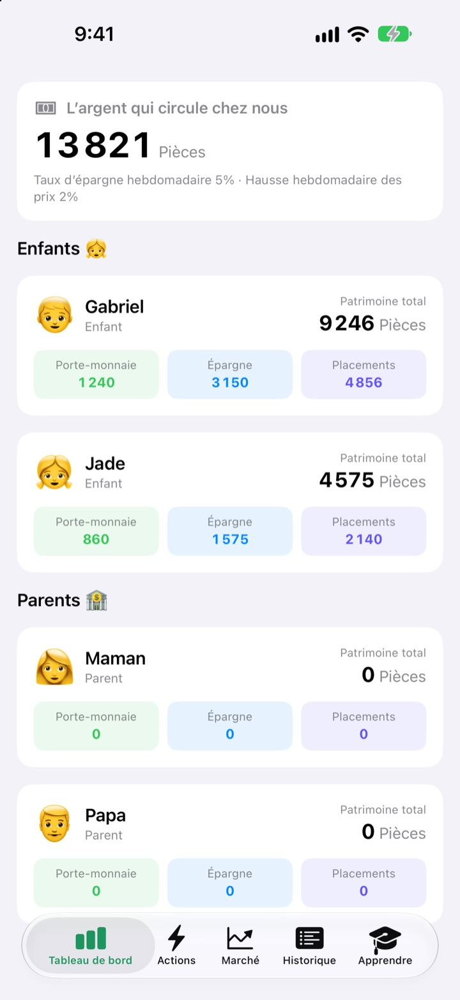
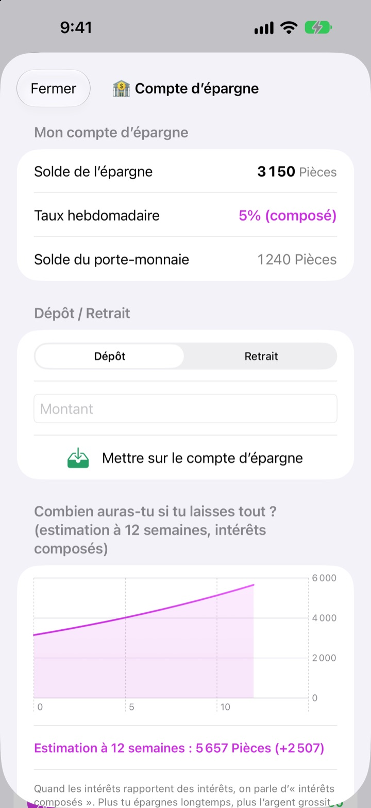
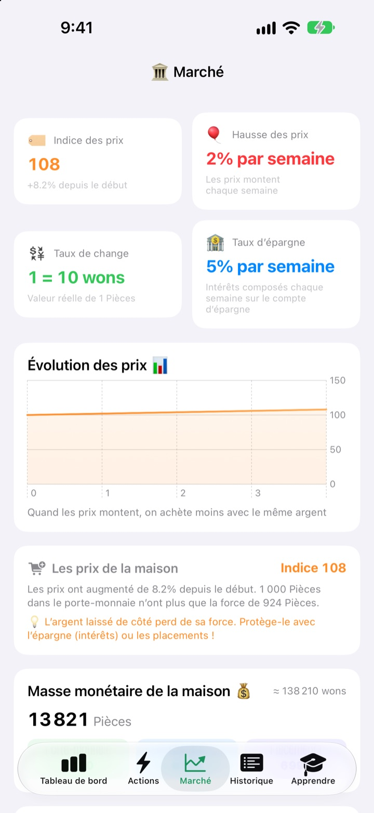
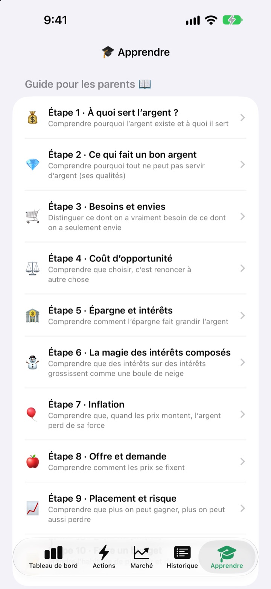

L’argent de poche
devient une leçon
Vous êtes la banque centrale de la famille, vos enfants sont les clients. Ils reçoivent leur argent de poche dans votre propre monnaie, s’achètent des friandises, voient les intérêts arriver sur leur épargne et vivent les hauts et les bas d’un fonds d’entraînement.
Toutes les fonctionnalités sont gratuites. Aucun argent réel ne circule.

Où mettriez-vous 1 000 pièces ?
Les mêmes 1 000 pièces, placées dans un porte-monnaie, sur un compte épargne et dans trois fonds. Avancez semaine après semaine et regardez ce que devient chacune. Les règles sont exactement celles de l’app.
« Mets-le de côté, ça va grossir » : un enfant y croit-il vraiment ?
Intérêts, intérêts composés, inflation : plus on explique, plus ça paraît lointain. Dans SukSuk Argent de poche, les enfants gagnent, dépensent et patientent par eux-mêmes. Le jour où ils découvrent des intérêts sur l’épargne de la semaine dernière, l’argent de poche suivant file droit sur le compte épargne.
La patience, ça se voit
L’argent du compte épargne rapporte des intérêts composés chaque semaine. Vous fixez le taux, et un graphique montre ce qu’il deviendra dans 12 semaines si on n’y touche pas.
Quelques jours sans ouvrir l’app ? À la prochaine ouverture, toutes les semaines dues sont versées d’un coup.

Voir les prix grignoter le porte-monnaie
L’onglet Marché réunit sur un seul écran l’indice des prix de la famille, l’inflation, le taux d’intérêt, la masse monétaire et le prix des fonds. Quand les prix grimpent, il montre combien 1 000 pièces dans le porte-monnaie achètent de moins.
Les enfants voient en chiffres que l’argent qui dort fond, et que l’argent épargné ou placé tient bon.

Dix discussions à avoir ensemble
Le guide pour les parents vous accompagne en dix étapes : à quoi sert l’argent, besoins et envies, coût d’opportunité, épargne et intérêts, intérêts composés, inflation, placement et risque, jusqu’au premier budget.
Un calculateur d’intérêts composés et un calculateur d’expérience sur les prix permettent de changer les chiffres et de voir ce qui se passe.

Trois étapes pour commencer
- 1
Nommez votre monnaie
Haricots, Étoiles, Pièces : le nom que votre famille préfère.
- 2
Choisissez un code PIN parent
Quatre chiffres. Seuls ceux qui le connaissent peuvent verser l’argent de poche ou modifier les réglages de la banque.
- 3
Ajoutez la famille
Ajoutez enfants et parents, versez le premier argent de poche, et c’est parti.
Où trouver quoi
- Tableau de bord
- Le porte-monnaie, l’épargne et les placements de chacun en un coup d’œil
- Actions
- Donner ou retirer de l’argent de poche, Code-barres de l’article, Ajouter un article, Inviter un enfant, Mode téléphone d’enfant, Réglages de la banque (code PIN parent requis)
- Marché
- Indice des prix, inflation, taux de change, taux d’épargne, masse monétaire, prix des fonds
- Historique
- Chaque mouvement d’argent, par date, par membre ou par type
- Apprendre
- Guide pour les parents en dix étapes, calculateur d’intérêts composés, calculateur d’expérience sur les prix
- 🐢 Fonds Tortue Tranquille
- De petites variations chaque jour, une montée lente et régulière
- 🐰 Actions Lapin Croissance
- Ça monte, ça descend, mais ça grandit
- 🚀 Actions Fusée Aventure
- Peut s’envoler, peut plonger
Au départ : 5 % d’intérêts d’épargne et 2 % d’inflation par semaine. Modifiez-les dans le Mode parent, sous Réglages de la banque. Avec une inflation à 0 %, les prix ne bougent plus.
Toutes les fonctionnalités sont gratuites
Gratuit
- Votre propre monnaie familiale et un Mode parent verrouillé par code PIN
- Verser et retirer de l’argent de poche, la Boutique de la maison et le paiement par code-barres
- Un compte épargne à intérêts composés chaque semaine
- Trois fonds d’entraînement avec graphiques de rendement
- L’onglet Marché et un historique des opérations par date
- Le guide pour les parents en dix étapes et deux calculateurs
- Le Mode téléphone d’enfant et la synchronisation iCloud
Soutenir le développeur
- Laissez un pourboire du montant de votre choix depuis Réglages de la banque, dans le Mode parent
- Le pourboire ne débloque rien. L’app fonctionne exactement pareil
Ni publicité ni abonnement. Le bouton de pourboire se trouve uniquement dans le Mode parent : vos enfants ne voient jamais de bouton d’achat.
Questions fréquentes
Y a-t-il de l’argent réel en jeu ?
Non. La monnaie et toutes les opérations de l’app sont fictives et servent uniquement à apprendre. Rien n’est relié à un vrai compte bancaire, à une carte ou à de l’argent liquide.
Comment voir les mêmes comptes sur le téléphone de mon enfant ?
Les appareils connectés au même compte iCloud synchronisent automatiquement les comptes de la famille. Vérifiez qu’iCloud est activé dans Réglages > Compte Apple > iCloud. Dans l’onglet Actions, sous Inviter un enfant, vous pouvez créer une invitation par code QR à scanner avec l’appareil photo de votre enfant. Sans iCloud, les données restent sur cet appareil uniquement.
Qu’est-ce que le Mode téléphone d’enfant ?
Il transforme le téléphone de votre enfant en un écran rien qu’à lui. Il ne voit que son porte-monnaie, ses placements, son historique et les leçons, et il faut le code PIN parent pour en sortir.
J’ai oublié le code PIN parent.
Le code PIN n’est enregistré que sur l’appareil : même le développeur ne peut pas le récupérer. En supprimant puis réinstallant l’app, vous pouvez tout reconfigurer, mais vos données actuelles seront aussi effacées.
Comment fonctionnent les intérêts de l’épargne ?
Chaque semaine, des intérêts composés s’ajoutent automatiquement au solde d’épargne. Vous fixez le taux dans le Mode parent, et les semaines écoulées sont réglées à la prochaine ouverture de l’app.
Le prix des fonds suit-il les vrais marchés ?
Non. Ce sont des données d’entraînement qui changent une fois par jour dans l’app. Plus le fonds est risqué, plus il varie. Ce ne sont pas de vrais produits financiers.
Pourquoi les prix augmentent-ils ?
Pour que les enfants ressentent l’inflation, l’indice des prix de la famille monte un peu chaque semaine. Modifiez le taux, ou mettez-le à 0 % pour l’arrêter, dans le Mode parent, sous Réglages de la banque. Si vous augmentez un peu, en parallèle, le prix des friandises et des jouets de la Boutique de la maison, la leçon marque davantage.
Comment tout supprimer ?
Supprimer l’app efface les données enregistrées sur l’appareil. Pour les données synchronisées avec iCloud, allez dans Réglages > Compte Apple > iCloud > Gérer le stockage et supprimez les données de l’app.
Les informations de ma famille sont-elles envoyées quelque part ?
Non. Aucune inscription, et toutes les données restent sur votre appareil et dans votre propre compte iCloud. Le développeur reçoit uniquement les retours que vous envoyez vous-même depuis le Mode parent, ainsi que des statistiques d’utilisation anonymes et des rapports de plantage.
Sur quels appareils fonctionne l’app ?
Sur iPhone avec iOS 17.0 ou ultérieur.
Une question, un bug, une idée ? Écrivez à leeo@kakao.com. En précisant le modèle de votre appareil et la version d’iOS, nous pourrons vous aider plus vite.